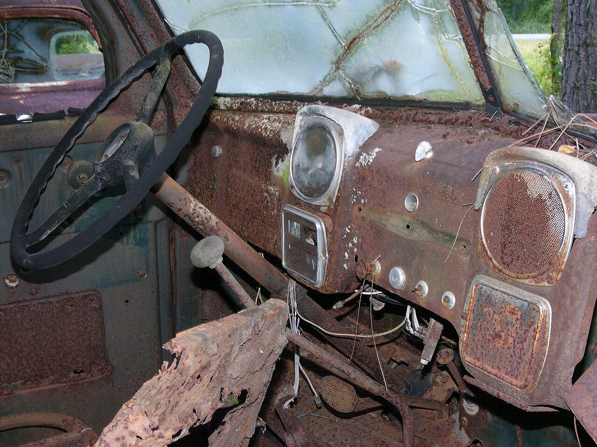

Undercoating: DIY vs Shop — What Actually Stops Rust
Undercoating is the best rust defence money can buy — but the wrong product on the wrong surface makes rust worse.

Photo: Hannes Grobe, CC BY-SA 4.0, via Wikimedia Commons
Oil-based vs rubberized, DIY vs shop — undercoating is the best rust defence there is, but only if the right product goes on the right surface.
Undercoating is the single best money you can spend against rust — or the worst, depending on what you put on and how. The wrong product sprayed over existing rust can seal moisture in and speed up the very damage you're trying to prevent. And the DIY-versus-shop question isn't just about money: it's about whether the product actually reaches the places rust starts. Here's how to get it right.
Why it's wrong
The biggest mistake is spraying a hard rubberized undercoating over a surface that already has rust. Rubberized coatings dry into a shell — and if there's rust or moisture underneath, that shell traps it there, hidden, eating away where you can't see it. The coating looks great from the outside while the metal fails underneath. The second mistake is a partial DIY job: spraying what you can reach lying in the driveway covers the flat middle of the floor and misses the seams, rocker panels, and inner wheel wells where rust actually starts. The third mistake is timing: undercoating after the first salting means spraying over a layer of salt, which is worse than useless. And skipping undercoating entirely because the car is new is a mistake too — factory coatings wear, and the first winter is when the protection matters most.
The right way
- Choose oil-based for most cars. Oil-based undercoatings (the kind that stay slightly wet and creep into seams) are the standard for a reason: they reach into joints and crevices, they don't crack, and they don't trap moisture. They need reapplying every year, but that's the trade-off for protection that actually works.
- Use a shop for the full job. A professional shop puts the car on a lift, cleans the underbody, and sprays inside rocker panels and frame rails with wands that reach where a driveway spray can can't. A shop undercoating typically runs $150–$200. That's the cheapest rust insurance your car will ever get.
- DIY works for touch-ups between shop visits. A few cans of oil-based spray, applied to a clean, dry underbody in the fall, keeps protection topped up. Do it on a dry day, wear old clothes and a mask, and don't spray the exhaust, brakes, or rubber boots.
- Do it in October, before the first salt. The underbody should be clean and dry when the coating goes on. Undercoating over salt or wet grime seals the enemy inside.
- Treat existing rust first. If there's surface rust, it needs to be cleaned and treated with a rust converter before any coating goes over it. Coating over rust is how rust wins.
- Keep washing the underbody all winter anyway. Undercoating is a shield, not a force field. Regular underbody washes are still part of the routine.
The rundown
Oil-based, applied in October, by a shop for the full job and DIY for touch-ups, never over untreated rust or salt. That's the undercoating routine that actually stops rust. The $150 to $200 a year is the cheapest insurance your car will ever get — a rusted brake line or fuel line is a safety failure, not a cosmetic problem.
← Back to the rust protection guide